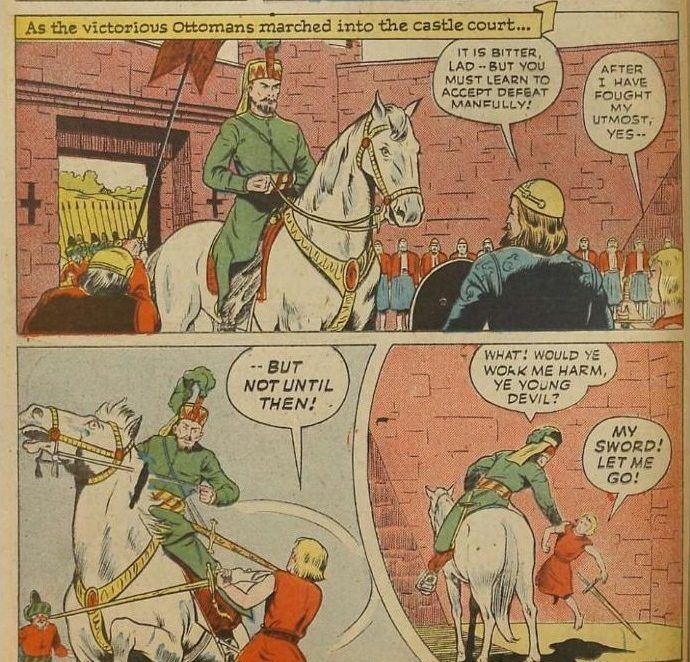

How it works: read the comic pages → answer the question about today's big idea → see what the comic got right and wrong → write 1–2 sentences. Done = all parts green, then turn in at the bottom.
Word help (tap to open)
- Sultan = the ruler of the Ottoman Empire
- Devshirme (dev-shir-MEH) = taking Christian boys and training them to serve the sultan
- Hostage = a person held to make sure someone else behaves
- Merit = rising because of skill and hard work, not family
- Turks / Ottomans = the comic uses both names for the same empire
- 1945 comic = made for American kids in the 1940s, during World War II. It uses some old words and shows one point of view.

Click the page to make it bigger.
Turn in your work
Your work saves on this device, so you can come back later. Your teacher sees it after you turn it in.
Comic: Real Life Comics no. 25 (1945), Nedor Publishing, a true-history comic of the 1940s. Public domain. Page images from Comic Book Plus (comicbookplus.com). Cropped to today's reading.